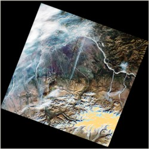
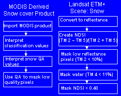

 This was a pilot study to assess the quality of the MODIS Snow Cover products in comparison with Landsat ETM+ (TM+) imagery of the same date and location. It also looked at the temperature gradient that is produced by the MODIS Land Surface Temperature product in comparison with TM+ data.
Elements of the Snowmap (Hall 2001) algorithm used by MODIS to classify snow were applied to a winter and fall TM+ scene for comparison. These base algorithms classified the clearly visible snow areas and removed areas of low reflectance and water from the classification. The additional algorithms used by MODIS classified these same areas as snow in addition to snow-covered forestland. However these additional algorithms also classified areas with no snow visible in the fall scene as snow. The QA data flags also classified some of these pixels as nominal quality data. Further study is required to determine if this is an aberration in the MODIS Snow Cover product, a systematic result of the classification process or if there actually was snow in the indicated locations. The Land Surface Temperature product produced a temperature gradient across the study area that showed the same trends as the TM+ data. This product is widely known for its quality and should be useful for future studies involving land surface temperature.
 More time and data is required to draw reliable conclusions. A coregistration of the data sets would allow for a quantitative comparison of the results. While the TM+ imagery was processed with using a NDSI, the MODIS Snowmap algorithm uses more information in the detection of snow. These differences account for the discrepancy in the data sets but do not identify the source of the discrepancies. In future studies it should be determined if the existing data set discrepancies are systematic or random occurrences. The data vendor should also be contacted for a better definition of the QA codes and what their practical effects are in assessing data quality.